quantum education, VR, and intuition
Can you touch a wavefunction?
Audun Skau Hansen Chief Research Officer @ MyrezePreviously: Senior lecturer @ KURT/UiO/Hylleraas
About me
Students do more than just listen
Emphasis on developing student skills
Higher order thinking
Engagement in activities
Reflection on own learning
Bonwell, C. C., & Eison, J. A. (1991). Active learning: Creating excitement in the classroom. 1991 ASHE-ERIC higher education reports. ERIC Clearinghouse on Higher Education, The George Washington University, One Dupont Circle, Suite 630, Washington, DC 20036-1183.The Learning Assistant (LA) program at UiO [*]
A pedagogic support unit (KURT)
Centre for Computing in Science Education
B-tjenesten (student tutoring service)
Interactive computational projects (spinoff from the Hylleraas centre for quantum molecular sciences)
[*] Odden, T. O., Lauvland, A., Bøe, M. V., & Henriksen, E. K. (2023). Implementing the Learning Assistant Model in European higher education. European Journal of Physics.A Centre of Excellence developing simulation methods for molecules in complex and extreme environments.
The Question
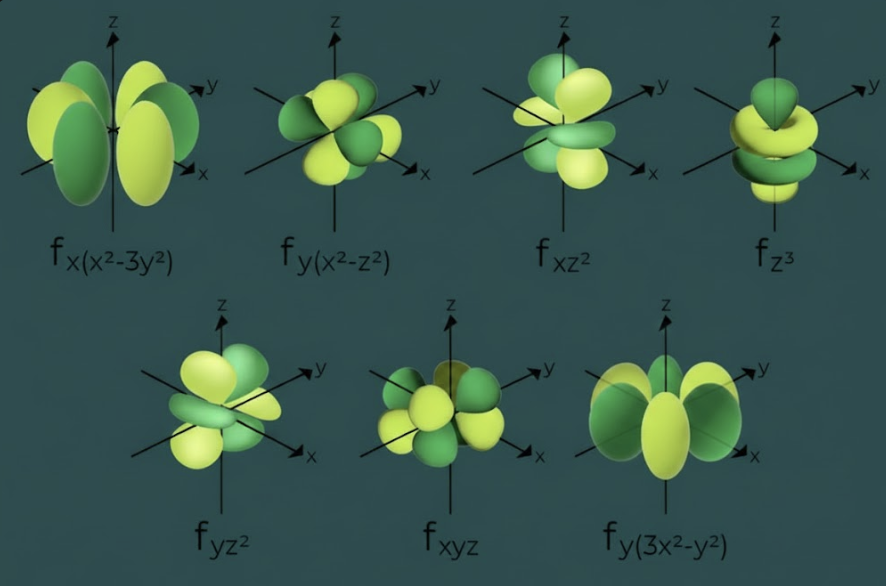
Textbook orbitals
Interactive VR orbitals
Can you touch a wavefunction?
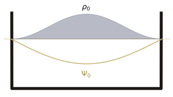
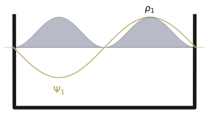
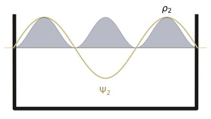
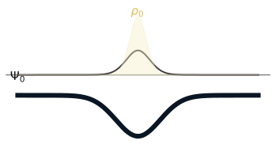
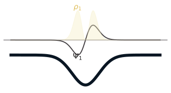
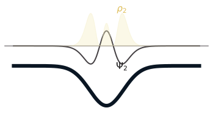
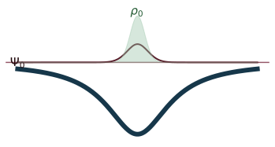
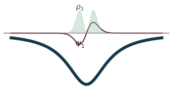
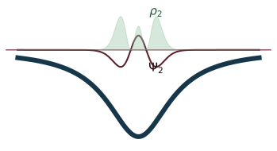
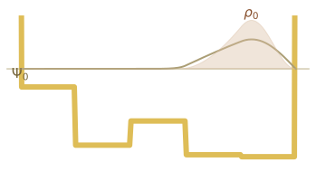
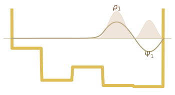
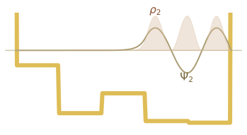
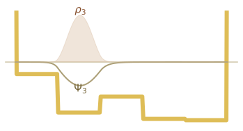
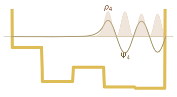
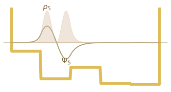
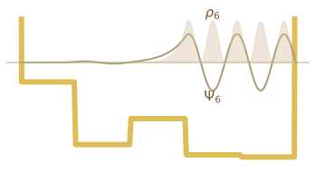
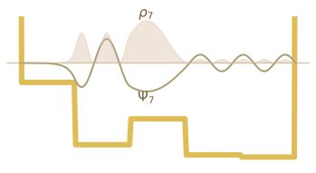
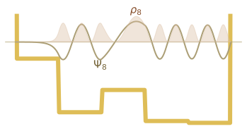
Wavefunctions from Research
Model of the Structure of Penicillin, Dorothy Hodgkin, Oxford
The "Impossible" Course
Physical Chemistry II – Intro to Quantum Chemistry
Course scope
→ Intro QM (Dirac notation, particle-in-a-box, hydrogen)
→ Many-body QM (helium, molecules, ab initio)
→ Time-dependent QM (time evolution, IR, spectroscopy)
10 credits, but basically a full bachelor unpacked.
Cognitive bottlenecks
Hilbert spaces, bra-ket, determinants
electrons, molecules, chemistry
Static blobs in textbooks
Active learning helps, but...
Even in LA-driven settings, students struggle to
grasp
wavefunctions, electron correlation,
nodal structures, and quantum mechanical properties like spin and phase.
Can tangible, interactive representations aid learning?
The Quantum Workforce Challenge
Workforce shortage & skill mismatch
— Greinert et al., PRPER 2023
Workforce shortage & skill mismatch
— Kaur & Venegas-Gomez, 2022
Education is concentrated at grad/PhD level
— Perron et al., QUEST 2021
The gap
Most quantum chemistry & computing practitioners:
masters and PhDs
What we also need:
Engineers, technicians, quantum-aware developers
→ Better intuition-building tools
A brief encounter with quantum chemistry
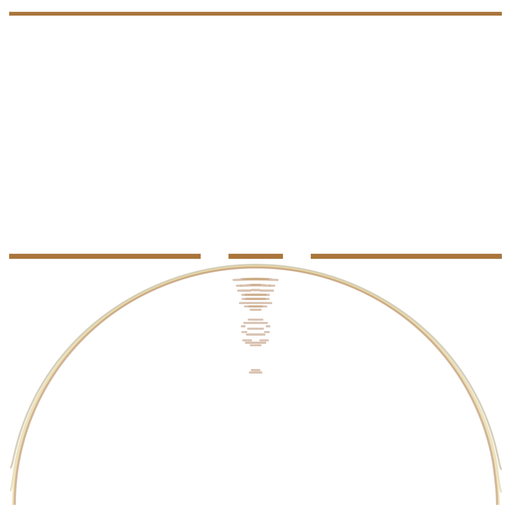
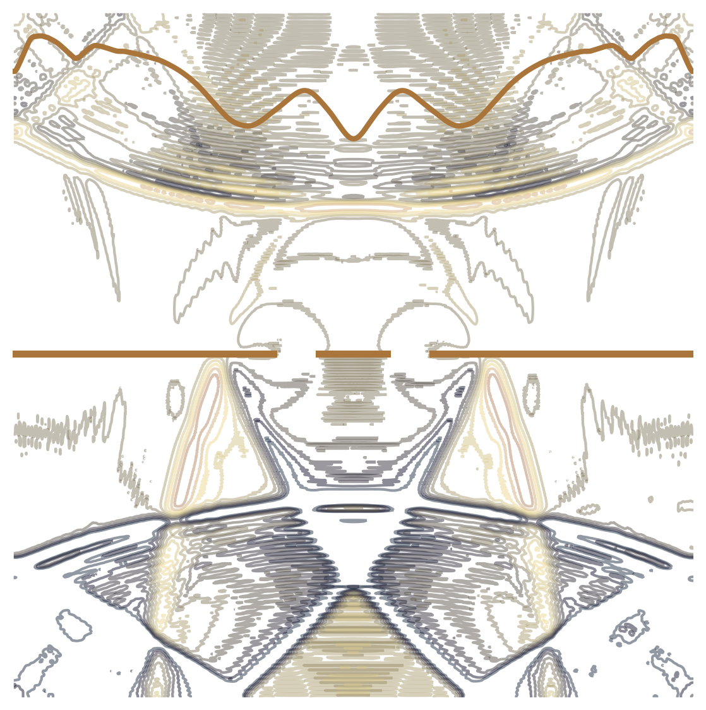
Particles can have wave properties
Louis De Broglie's waves (1924)
Erwin Schrödinger's equation (1925)
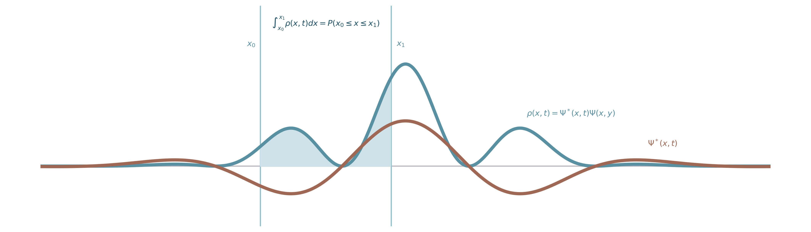
Max Born's interpretation (1926)

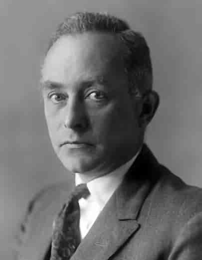
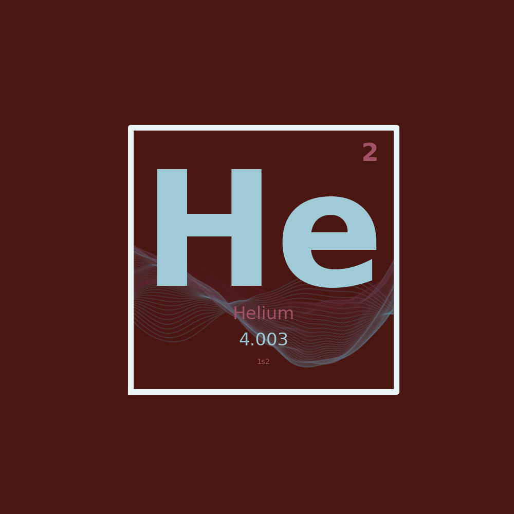
From one particle to many
Helium: 2 electrons, 1 nucleus
The molecular Schrödinger equation
The variational principle
Any trial wavefunction gives energy ≥ exact ground state
Requirements on $\Psi(x_1, x_2)$
- Correct number of electrons
- Normalizable: $\int |\Psi|^2 dx_1 dx_2 = 1$
- Antisymmetric: $\Psi(x_1, x_2) = -\Psi(x_2, x_1)$
- Physically reasonable fragmentation
Slater determinant
Hartree product: $\psi_1(x_1)\psi_2(x_2)$
↓
Slater determinant: $\frac{1}{\sqrt{2}}[\psi_1(x_1)\psi_2(x_2) - \psi_1(x_2)\psi_2(x_1)]$
A basis function
$| \phi \rangle$
A basis set
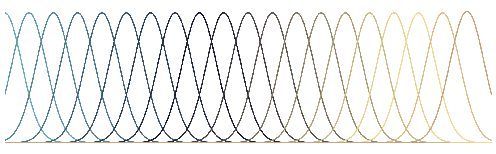
$\{ | \phi_i \rangle \}$
Local vs delocalized basis functions
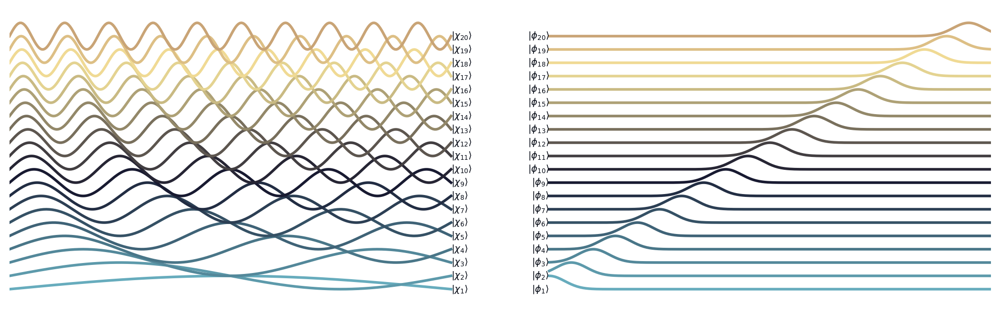
Basis expansion
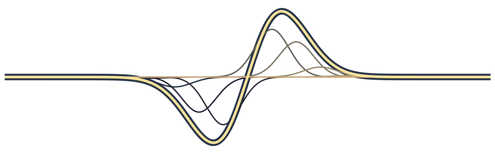
$| \psi \rangle = \sum_i | \phi_i \rangle c_i$
The visualization problem
Students see orbitals as
static isosurfaces in a book
What if we could walk into the basis expansion?
Stepping Inside
Braketlab as a didactic tool
Computational lab
Visualizing electron correlation
Closing the Loop
Can you touch a wavefunction?
Probably not literally, but we can provide a
tangible representation
of wavefunctions, where more of their logic is intrinsic.
Practical applications
Thank you!
audun@myreze.com